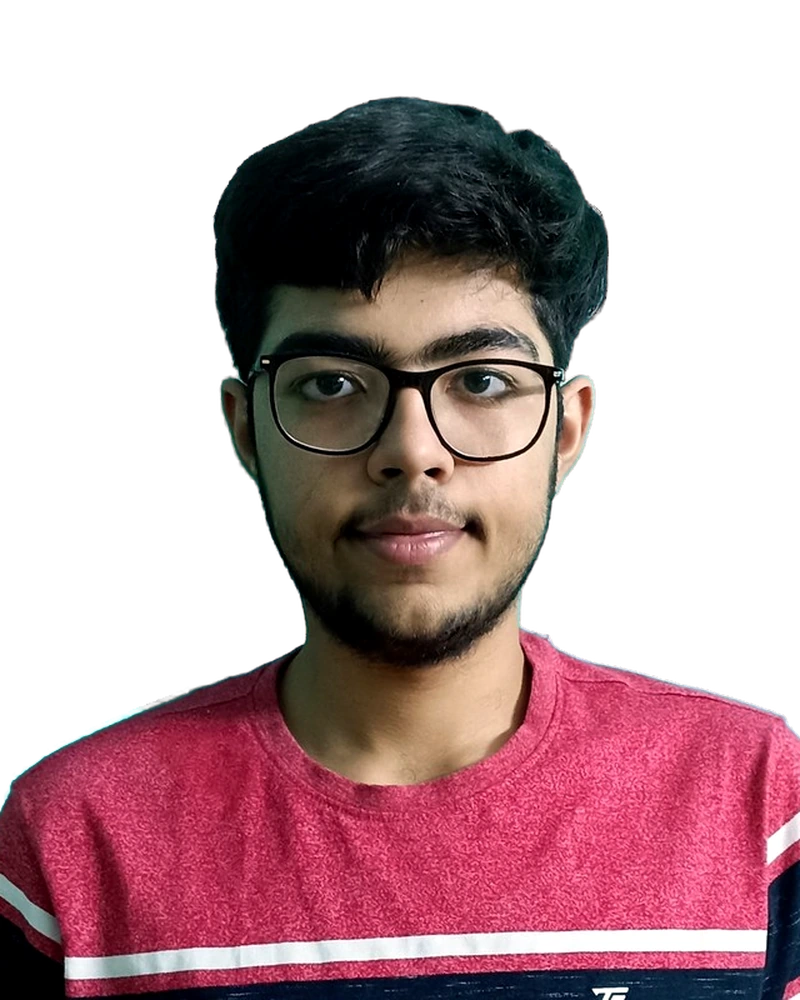
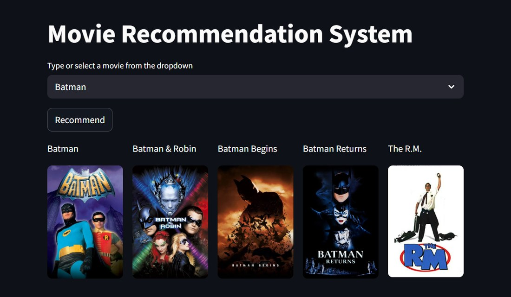
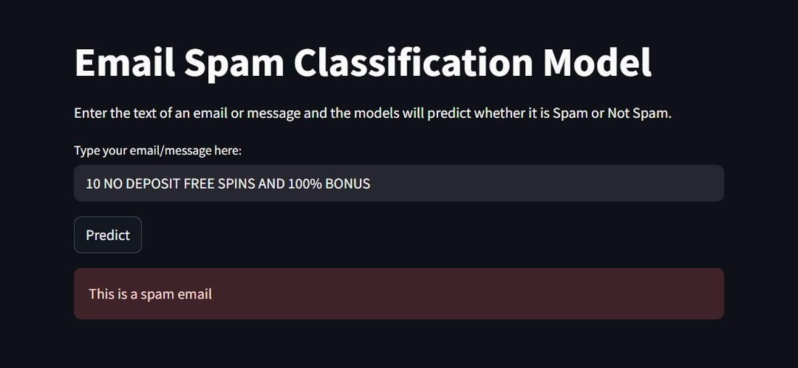

<title>Saksham Suri Portfolio</title>
<meta name="claude:viewport-fit-sides" content="cover">
<link rel="preconnect" href="https://fonts.googleapis.com">
<link rel="preconnect" href="https://fonts.gstatic.com" crossorigin>
<link rel="stylesheet" href="https://fonts.googleapis.com/css2?family=Bricolage+Grotesque:opsz,wght@12..96,400;12..96,600;12..96,800&family=Instrument+Sans:wght@400;500;600&family=JetBrains+Mono:wght@400;500&display=swap">
<style>
/* Layout: sticky top nav, split hero where the portrait background matches the page ground, alternating project rows. */
:root {
  --bg: #0d1020;
  --surface: #151a33;
  --fg: #ecebf3;
  --muted: #a0a6c2;
  --line: #272d4d;
  --accent: #ff7a63;
  --accent-ink: #1b0c09;
  --teal: #7fd1c7;
  --accent2: #ffb36b;
  --font-display: "Bricolage Grotesque", "Helvetica Neue", Arial, sans-serif;
  --font-body: "Instrument Sans", system-ui, -apple-system, "Segoe UI", sans-serif;
  --font-mono: "JetBrains Mono", ui-monospace, "SFMono-Regular", Menlo, monospace;
  color-scheme: dark;
}
@media (prefers-color-scheme: light) {
  :root:not([data-theme="dark"]) {
    --bg: #f4f5fb; --surface: #ffffff; --fg: #141831; --muted: #565c7c; --line: #dcdfee;
    --accent: #d6402a; --accent-ink: #ffffff; --teal: #0f7a70; --accent2: #e8892f; color-scheme: light;
  }
}
:root[data-theme="light"] {
  --bg: #f4f5fb; --surface: #ffffff; --fg: #141831; --muted: #565c7c; --line: #dcdfee;
  --accent: #d6402a; --accent-ink: #ffffff; --teal: #0f7a70; --accent2: #e8892f; color-scheme: light;
}

* { box-sizing: border-box; }
html { scroll-behavior: smooth; }
body {
  margin: 0;
  background: var(--bg);
  color: var(--fg);
  font-family: var(--font-body);
  font-size: 17px;
  line-height: 1.6;
  padding-left: max(16px, env(safe-area-inset-left, 0px));
  padding-right: max(16px, env(safe-area-inset-right, 0px));
  overflow-x: hidden;
}
body::before {
  content: ""; position: fixed; inset: 0 0 auto; height: env(safe-area-inset-top, 0px);
  z-index: 10; background: var(--bg);
}
a { color: inherit; }
:focus-visible { outline: 2px solid var(--accent); outline-offset: 3px; border-radius: 4px; }
.wrap { width: 100%; max-width: 1120px; margin: 0 auto; }
h1, h2, h3 { font-family: var(--font-display); text-wrap: balance; margin: 0; line-height: 1.05; letter-spacing: -0.02em; }
p { margin: 0; }
.mono { font-family: var(--font-mono); }
.eyebrow { font-family: var(--font-mono); font-size: 0.78rem; letter-spacing: 0.14em; text-transform: uppercase; color: var(--accent); display: flex; align-items: center; gap: 12px; }
.eyebrow::before { content: ""; width: 28px; height: 2px; background: var(--accent); flex: none; }

/* Header */
.site-header {
  position: sticky; top: env(safe-area-inset-top, 0px); z-index: 20;
  margin: 0 calc(-1 * max(16px, env(safe-area-inset-left, 0px)));
  padding-left: max(16px, env(safe-area-inset-left, 0px));
  padding-right: max(16px, env(safe-area-inset-right, 0px));
  background: color-mix(in srgb, var(--bg) 82%, transparent);
  backdrop-filter: blur(12px); -webkit-backdrop-filter: blur(12px);
  border-bottom: 1px solid var(--line);
}
.site-header .wrap { display: flex; align-items: center; justify-content: space-between; gap: 16px; min-height: 64px; }
.brand { font-family: var(--font-display); font-weight: 800; font-size: 1.15rem; text-decoration: none; letter-spacing: -0.01em; white-space: nowrap; }
.brand span { color: var(--accent); }
nav ul { display: flex; gap: clamp(14px, 3vw, 34px); list-style: none; margin: 0; padding: 0; }
nav a { text-decoration: none; font-size: 0.95rem; font-weight: 500; color: var(--muted); padding: 6px 0; border-bottom: 2px solid transparent; transition: color .2s, border-color .2s; }
nav a:hover, nav a.active { color: var(--fg); border-color: var(--accent); }

/* Hero */
.hero { padding-block: clamp(40px, 7vw, 96px) clamp(40px, 6vw, 72px); }
.hero-grid { display: grid; grid-template-columns: minmax(0, 1.15fr) minmax(0, 0.85fr); gap: clamp(28px, 5vw, 72px); align-items: center; }
.hero h1 { font-size: clamp(3rem, 8.5vw, 6.6rem); font-weight: 800; margin-top: 18px; }
.hero h1 em { font-style: normal; color: var(--accent); background: linear-gradient(100deg, var(--accent), var(--accent2)); -webkit-background-clip: text; background-clip: text; -webkit-text-fill-color: transparent; }
.hero .lede { margin-top: 18px; max-width: 34em; font-size: clamp(1.05rem, 1.6vw, 1.22rem); color: var(--muted); }
.hero h1 + .lede { margin-top: 24px; font-size: clamp(1.2rem, 2vw, 1.5rem); color: var(--fg); line-height: 1.4; }
.hero .lede strong { color: var(--fg); font-weight: 600; }
.cta-row { display: flex; flex-wrap: wrap; gap: 12px; margin-top: 30px; }
.btn { display: inline-flex; align-items: center; gap: 8px; padding: 12px 22px; border-radius: 999px; font-weight: 600; font-size: 0.95rem; text-decoration: none; border: 1.5px solid var(--line); transition: transform .2s, border-color .2s, background .2s; }
.btn:hover { transform: translateY(-2px); border-color: var(--accent); }
.btn.primary { background: var(--accent); color: var(--accent-ink); border-color: var(--accent); }
.btn.primary:hover { filter: brightness(1.06); }
.probe {
  margin-top: 34px; max-width: 34em; padding: 16px 18px; border: 1px solid var(--line); border-radius: 10px;
  background: var(--surface); font-family: var(--font-mono); font-size: 0.82rem; line-height: 1.7; overflow-wrap: anywhere;
}
.probe .k { color: var(--muted); }
.probe .out { color: var(--accent); font-weight: 500; }
.probe .src { color: var(--teal); }
.portrait-wrap { position: relative; justify-self: center; width: 100%; max-width: 430px; isolation: isolate; }
.portrait-wrap::before {
  content: ""; position: absolute; inset: 16px -16px -16px 16px; border: 1.5px solid var(--accent);
  border-radius: 220px 220px 28px 28px; opacity: .55; z-index: -1;
}
.arch {
  position: relative; overflow: hidden; aspect-ratio: 4 / 5; border-radius: 220px 220px 28px 28px;
  background:
    radial-gradient(120% 70% at 50% 0%, color-mix(in srgb, var(--accent) 38%, transparent), transparent 62%),
    radial-gradient(90% 60% at 100% 100%, color-mix(in srgb, var(--teal) 30%, transparent), transparent 70%),
    var(--surface);
  border: 1px solid var(--line);
}
.arch img { position: absolute; inset: 0; width: 100%; height: 100%; object-fit: cover; object-position: center top; display: block; }
.badge { position: absolute; right: -26px; bottom: 44px; width: 118px; height: 118px; filter: drop-shadow(0 10px 18px rgba(0,0,0,.35)); }
.badge .plate { fill: var(--bg); stroke: var(--line); }
.badge text { fill: var(--fg); font-family: var(--font-mono); font-size: 11px; letter-spacing: 2px; text-transform: uppercase; }
.badge .ring { transform-origin: 70px 70px; animation: spin 24s linear infinite; }
.badge .dot { fill: var(--accent); }
.float {
  position: absolute; z-index: 2; font-family: var(--font-mono); font-size: 0.78rem; padding: 6px 13px; border-radius: 999px;
  background: color-mix(in srgb, var(--bg) 78%, transparent); backdrop-filter: blur(8px); -webkit-backdrop-filter: blur(8px);
  border: 1px solid var(--line); box-shadow: 0 8px 22px -10px rgba(0,0,0,.5); animation: bob 6s ease-in-out infinite;
}
.float::before { content: ""; display: inline-block; width: 7px; height: 7px; border-radius: 50%; background: var(--accent); margin-right: 8px; }
.f1 { top: 12%; left: -34px; }
.f2 { top: 34%; right: -30px; animation-delay: -1.5s; }
.f3 { bottom: 26%; left: -40px; animation-delay: -3s; }
.f4 { bottom: 8%; right: 70px; animation-delay: -4.5s; }
.f2::before, .f4::before { background: var(--teal); }
@keyframes spin { to { transform: rotate(360deg); } }
@keyframes bob { 0%, 100% { transform: translateY(0); } 50% { transform: translateY(-8px); } }

.hero { position: relative; isolation: isolate; }
.hero::before {
  content: ""; position: absolute; z-index: -1; pointer-events: none; inset: -80px -10% auto -10%; height: 560px;
  background:
    radial-gradient(520px 320px at 78% 40%, color-mix(in srgb, var(--accent) 22%, transparent), transparent 70%),
    radial-gradient(460px 300px at 12% 10%, color-mix(in srgb, var(--teal) 16%, transparent), transparent 70%);
}
.hero::after {
  content: ""; position: absolute; z-index: -1; pointer-events: none; inset: 0;
  background-image: radial-gradient(var(--line) 1px, transparent 1.2px); background-size: 24px 24px;
  -webkit-mask-image: radial-gradient(ellipse 60% 70% at 72% 45%, #000, transparent 75%);
  mask-image: radial-gradient(ellipse 60% 70% at 72% 45%, #000, transparent 75%);
}
.pill { display: inline-flex; align-items: center; gap: 10px; padding: 7px 14px 7px 12px; border: 1px solid var(--line); border-radius: 999px; background: color-mix(in srgb, var(--surface) 80%, transparent); font-size: 0.86rem; color: var(--muted); }
.pill i { width: 8px; height: 8px; border-radius: 50%; background: #4ade80; box-shadow: 0 0 0 0 rgba(74,222,128,.6); animation: pulse 2.2s infinite; }
@keyframes pulse { 70% { box-shadow: 0 0 0 9px rgba(74,222,128,0); } 100% { box-shadow: 0 0 0 0 rgba(74,222,128,0); } }

.progress { position: absolute; left: 0; bottom: -1px; height: 2px; width: 0; background: linear-gradient(90deg, var(--accent), var(--accent2)); }

.marquee {
  margin: 0 calc(-1 * max(16px, env(safe-area-inset-left, 0px)));
  border-top: 1px solid var(--line); overflow: hidden; padding-block: 18px; background: color-mix(in srgb, var(--surface) 60%, transparent);
}
.marquee .track { display: flex; width: max-content; animation: slide 38s linear infinite; }
.marquee .grp { display: flex; flex: none; }
.marquee span { font-family: var(--font-display); font-weight: 600; font-size: clamp(1.1rem, 2.2vw, 1.5rem); letter-spacing: -0.01em; color: var(--muted); padding-right: 28px; display: inline-flex; align-items: center; gap: 28px; white-space: nowrap; }
.marquee span::after { content: ""; width: 8px; height: 8px; border-radius: 2px; background: var(--accent); transform: rotate(45deg); }
@keyframes slide { to { transform: translateX(-50%); } }

.inline-link { color: var(--accent); text-decoration: underline; text-decoration-thickness: 1px; text-underline-offset: 3px; }
.inline-link:hover { text-decoration-thickness: 2px; }
.win { transition: transform .25s, border-color .25s; }
.win:hover { transform: translateY(-4px); border-color: var(--accent); }
.shot { box-shadow: 14px 14px 0 -2px color-mix(in srgb, var(--accent) 30%, transparent), 0 24px 60px -30px rgba(0,0,0,.55); }
.project:nth-child(even) .shot { box-shadow: -14px 14px 0 -2px color-mix(in srgb, var(--teal) 30%, transparent), 0 24px 60px -30px rgba(0,0,0,.55); }
.btn.primary { background: linear-gradient(100deg, var(--accent), var(--accent2)); border-color: transparent; }

.stats { display: grid; grid-template-columns: repeat(4, minmax(0, 1fr)); gap: 1px; margin-top: clamp(40px, 6vw, 72px); background: var(--line); border: 1px solid var(--line); border-radius: 14px; overflow: hidden; }
.stat { background: var(--surface); padding: 20px 22px; }
.stat b { display: block; font-family: var(--font-display); font-size: clamp(1.7rem, 3.4vw, 2.5rem); font-weight: 800; letter-spacing: -0.02em; font-variant-numeric: tabular-nums; }
.stat span { font-size: 0.85rem; color: var(--muted); }

/* Sections */
section.block { padding-block: clamp(56px, 8vw, 104px); scroll-margin-top: 64px; border-top: 1px solid var(--line); }
.sec-head { display: flex; flex-direction: column; gap: 14px; margin-bottom: clamp(28px, 4vw, 52px); }
.sec-head h2 { font-size: clamp(2.1rem, 5vw, 3.6rem); font-weight: 800; }

/* About */
.about-grid { display: grid; grid-template-columns: minmax(0, 1fr) minmax(0, 1fr); gap: clamp(28px, 5vw, 72px); }
.about-copy { display: grid; gap: 18px; color: var(--muted); max-width: 36em; }
.about-copy strong { color: var(--fg); font-weight: 600; }
.skills { display: grid; gap: 22px; align-content: start; }
.skill-group h3 { font-family: var(--font-mono); font-size: 0.74rem; font-weight: 500; letter-spacing: 0.14em; text-transform: uppercase; color: var(--muted); margin-bottom: 10px; }
.chips { display: flex; flex-wrap: wrap; gap: 8px; }
.chip { font-family: var(--font-mono); font-size: 0.8rem; padding: 5px 12px; border: 1px solid var(--line); border-radius: 999px; background: var(--surface); }
.wins { margin-top: clamp(32px, 4vw, 52px); display: grid; grid-template-columns: repeat(auto-fit, minmax(230px, 1fr)); gap: 18px; }
.win { padding: 22px; border: 1px solid var(--line); border-radius: 14px; background: var(--surface); display: grid; gap: 8px; align-content: start; }
.win b { font-family: var(--font-display); font-size: 1.12rem; line-height: 1.25; }
.win p { color: var(--muted); font-size: 0.94rem; }

/* Timeline rows (education, experience) */
.rows { display: grid; }
.row { display: grid; grid-template-columns: minmax(0, 11rem) minmax(0, 1fr); gap: clamp(16px, 4vw, 56px); padding-block: 28px; border-top: 1px solid var(--line); }
.row:first-child { border-top: 0; padding-top: 0; }
.row .when { font-family: var(--font-mono); font-size: 0.82rem; color: var(--muted); padding-top: 6px; line-height: 1.6; }
.row h3 { font-size: clamp(1.3rem, 2.4vw, 1.75rem); font-weight: 600; letter-spacing: -0.015em; }
.row .where { margin-top: 6px; color: var(--accent); font-weight: 500; font-size: 0.97rem; }
.row .grade { display: inline-block; margin-top: 12px; font-family: var(--font-mono); font-size: 0.82rem; padding: 4px 12px; border-radius: 6px; background: var(--surface); border: 1px solid var(--line); }
.row ul { margin: 14px 0 0; padding-left: 1.15em; color: var(--muted); display: grid; gap: 10px; max-width: 42em; }
.row li::marker { color: var(--accent); }
.row li strong { color: var(--fg); font-weight: 600; }

/* Projects */
.projects { display: grid; gap: clamp(48px, 7vw, 88px); }
.project { display: grid; grid-template-columns: minmax(0, 1.1fr) minmax(0, 0.9fr); gap: clamp(24px, 4vw, 56px); align-items: center; }
.project:nth-child(even) .shot { order: 2; }
.shot { display: block; border: 1px solid var(--line); border-radius: 14px; overflow: hidden; background: #0e1117; box-shadow: 0 24px 60px -30px rgba(0,0,0,.55); transition: transform .3s; }
.shot:hover { transform: translateY(-4px); }
.shot img { display: block; width: 100%; height: auto; }
.project .meta { font-family: var(--font-mono); font-size: 0.78rem; color: var(--muted); letter-spacing: 0.06em; }
.project h3 { font-size: clamp(1.7rem, 3.4vw, 2.4rem); font-weight: 800; margin-top: 10px; }
.project p { margin-top: 14px; color: var(--muted); }
.project p strong { color: var(--fg); font-weight: 600; }
.project .chips { margin-top: 18px; }
.project .cta-row { margin-top: 22px; }
.btn.small { padding: 9px 18px; font-size: 0.88rem; }

/* Footer */
.contact { padding-block: clamp(56px, 8vw, 96px) 40px; border-top: 1px solid var(--line); scroll-margin-top: 64px; }
.contact h2 { margin-top: 14px; font-size: clamp(2.2rem, 6vw, 4.4rem); font-weight: 800; max-width: 14em; }
.contact h2 em { font-style: normal; color: var(--accent); }
.contact-list { display: flex; flex-wrap: wrap; gap: 14px 40px; margin-top: 30px; }
.contact-item { display: flex; align-items: center; gap: 10px; flex-wrap: wrap; }
.contact-item .label { font-family: var(--font-mono); font-size: 0.74rem; letter-spacing: 0.12em; text-transform: uppercase; color: var(--muted); }
.contact-item .val { font-family: var(--font-mono); font-size: 0.95rem; user-select: all; overflow-wrap: anywhere; }
.copy { font: inherit; font-size: 0.78rem; cursor: pointer; padding: 3px 10px; border-radius: 999px; border: 1px solid var(--line); background: transparent; color: var(--muted); }
.copy:hover { color: var(--fg); border-color: var(--accent); }
.foot { margin-top: 56px; display: flex; flex-wrap: wrap; justify-content: space-between; gap: 12px; color: var(--muted); font-size: 0.85rem; }

@media (max-width: 860px) {
  .hero-grid { grid-template-columns: minmax(0, 1fr); }
  .portrait-wrap { order: -1; max-width: 320px; justify-self: start; margin-left: 0; margin-right: 16px; }
  .stats { grid-template-columns: repeat(2, minmax(0, 1fr)); }
  .about-grid { grid-template-columns: minmax(0, 1fr); }
  .wins { grid-template-columns: minmax(0, 1fr); }
  .row { grid-template-columns: minmax(0, 1fr); gap: 6px; }
  .row .when { padding-top: 0; }
  .project { grid-template-columns: minmax(0, 1fr); }
  .project:nth-child(even) .shot { order: 0; }
}
@media (max-width: 520px) {
  body { font-size: 16px; }
  .site-header .wrap { min-height: 58px; }
  .brand { font-size: 1rem; }
  nav ul { gap: 12px; }
  nav a { font-size: 0.82rem; }
}
@media (prefers-reduced-motion: reduce) {
  html { scroll-behavior: auto; }
  * { transition: none !important; animation: none !important; }
}
</style>

<header class="site-header">
  <div class="wrap">
    <a class="brand" href="#top" aria-label="Back to top">Saksham<span>.</span>Suri</a>
    <nav aria-label="Sections">
      <ul>
        <li><a href="#about">About</a></li>
        <li><a href="#education">Education</a></li>
        <li><a href="#experience">Experience</a></li>
        <li><a href="#projects">Projects</a></li>
        <li><a href="#contact">Contact</a></li>
      </ul>
    </nav>
  </div>
  <div class="progress" id="progress"></div>
</header>

<main id="top">
  <section class="hero" aria-label="Introduction">
    <div class="wrap">
      <div class="hero-grid">
        <div>
          <p class="pill"><i></i>Open to Data Analyst and Data Science roles</p>
          <h1>Hi, I&rsquo;m <em>Saksham</em></h1>
          <p class="lede">
            A <strong>data science and analytics enthusiast</strong> who turns raw data into useful insights.
          </p>
          <p class="lede">
            I&rsquo;m a Computer Engineering graduate from DTU with hands-on experience in Python, Pandas, Scikit-learn and Streamlit, and I like making data easy to understand through clear visualizations. I&rsquo;m looking for <strong>Data Analyst and Data Science opportunities</strong> where I can learn, build and make an impact.
          </p>
          <div class="cta-row">
            <a class="btn primary" href="#projects">See my projects</a>
            <a class="btn" href="#contact">Get in touch</a>
          </div>
        </div>
        <div class="portrait-wrap">
          <div class="arch">
            
          </div>
        </div>
      </div>
    </div>
  </section>

  <div class="marquee" aria-hidden="true">
    <div class="track">
      <div class="grp"><span>Python</span><span>Pandas</span><span>NumPy</span><span>Scikit-learn</span><span>Seaborn</span><span>Matplotlib</span><span>Streamlit</span><span>Gradio</span><span>SQL</span><span>MySQL</span><span>C++</span><span>Jupyter</span></div>
      <div class="grp"><span>Python</span><span>Pandas</span><span>NumPy</span><span>Scikit-learn</span><span>Seaborn</span><span>Matplotlib</span><span>Streamlit</span><span>Gradio</span><span>SQL</span><span>MySQL</span><span>C++</span><span>Jupyter</span></div>
    </div>
  </div>

  <section class="block" id="about">
    <div class="wrap">
      <div class="sec-head">
        <p class="eyebrow">About</p>
        <h2>Know more about me.</h2>
      </div>
      <div class="about-grid">
        <div class="about-copy">
          <p>
            I&rsquo;m a Computer Engineering graduate from Delhi Technological University, and I&rsquo;m drawn to <strong>data science and data analytics</strong>. I enjoy taking raw, messy data and turning it into something people can understand and act on.
          </p>
          <p>
            During my internship I worked through the full workflow on real-world datasets: <strong>data cleaning, EDA, preprocessing, feature engineering, model building and evaluation</strong>, using Pandas, NumPy and Scikit-learn. That included a <a class="inline-link" href="https://github.com/SakshamSuri7/Covid_Analysis_Capstone_Project" target="_blank" rel="noopener noreferrer">global COVID-19 analysis</a> with Seaborn visualizations and a <a class="inline-link" href="https://github.com/SakshamSuri7/Loan_Dataset_ML_model" target="_blank" rel="noopener noreferrer">loan approval model</a> with 87.3% accuracy.
          </p>
          <p>
            <strong>Machine learning</strong> is where I like to build. My spam classifier reaches 97% accuracy, and my movie recommender combines content-based and collaborative filtering. Both run as Streamlit apps, so anyone can try them. I have also solved 350+ DSA problems to keep my problem-solving sharp.
          </p>
          <p>
            Beyond code, I like to teach and mentor. I guided 5+ underprivileged students on careers and studies, and taught computer literacy to 13 school students. I&rsquo;m now looking for Data Analyst and Data Science roles where I can keep learning and make an impact.
          </p>
        </div>
        <div class="skills">
          <div class="skill-group">
            <h3>Languages</h3>
            <div class="chips"><span class="chip">Python</span><span class="chip">C++</span><span class="chip">SQL</span><span class="chip">HTML</span><span class="chip">CSS</span></div>
          </div>
          <div class="skill-group">
            <h3>Libraries</h3>
            <div class="chips"><span class="chip">NumPy</span><span class="chip">Pandas</span><span class="chip">Scikit-learn</span><span class="chip">Streamlit</span><span class="chip">Gradio</span><span class="chip">Matplotlib</span><span class="chip">Seaborn</span></div>
          </div>
          <div class="skill-group">
            <h3>Tools</h3>
            <div class="chips"><span class="chip">VS Code</span><span class="chip">GitHub</span><span class="chip">Jupyter</span><span class="chip">PyCharm</span></div>
          </div>
          <div class="skill-group">
            <h3>Coursework</h3>
            <div class="chips"><span class="chip">Data Structures &amp; Algorithms</span><span class="chip">OOP</span><span class="chip">DBMS</span><span class="chip">Operating Systems</span><span class="chip">Software Engineering</span><span class="chip">Machine Learning</span><span class="chip">Artificial Intelligence</span></div>
          </div>
        </div>
      </div>
      <div class="wins">
        <div class="win">
          <b>Data Science training</b>
          <p>Completed the Data Science course on the iStudio platform, with hands-on work in data analysis, visualization and machine learning.</p>
        </div>
        <div class="win">
          <b>NPTEL, top 2% and top 5%</b>
          <p><a class="inline-link" href="https://drive.google.com/file/d/1tICbf02NpJURD2NhEzSxo1t_g_gMIUF9/view" target="_blank" rel="noopener noreferrer">Scored 91% in Python</a> (IIT Ropar). <a class="inline-link" href="https://drive.google.com/file/d/1Bc1usR99X3IhtgDNqWSzx17wpq7KQlvc/view" target="_blank" rel="noopener noreferrer">Scored 90% in Internet of Things</a> (IIT Kharagpur).</p>
        </div>
        <div class="win">
          <b>Student Mentor</b>
          <p>Mentored 5+ underprivileged students on careers and studies under the Desh ke Mentor Program, Govt. of Delhi (Jan to Jul 2022).</p>
        </div>
        <div class="win">
          <b>350+ DSA problems</b>
          <p>Solved across <a class="inline-link" href="https://www.naukri.com/code360/profile/0291d045-f69b-4251-8905-dc786498a827" target="_blank" rel="noopener noreferrer">CodeStudio</a>, <a class="inline-link" href="https://leetcode.com/u/surisaksham07/" target="_blank" rel="noopener noreferrer">LeetCode</a> and <a class="inline-link" href="https://www.geeksforgeeks.org/user/surisak6ttm/" target="_blank" rel="noopener noreferrer">GeeksForGeeks</a>.</p>
        </div>
      </div>
    </div>
  </section>

  <section class="block" id="education">
    <div class="wrap">
      <div class="sec-head">
        <p class="eyebrow">Education</p>
        <h2>Where I studied.</h2>
      </div>
      <div class="rows">
        <article class="row">
          <div class="when">Dec 2021 &ndash; Aug 2025</div>
          <div>
            <h3>Bachelor of Technology, Computer Engineering</h3>
            <p class="where">Delhi Technological University, Delhi</p>
            <span class="grade">CGPA 8.15</span>
          </div>
        </article>
        <article class="row">
          <div class="when">Apr 2020 &ndash; Mar 2021</div>
          <div>
            <h3>Senior Secondary, Class 12 (CBSE)</h3>
            <p class="where">Hans Raj Model School, Delhi</p>
            <span class="grade">96.2%</span>
          </div>
        </article>
        <article class="row">
          <div class="when">Apr 2018 &ndash; Mar 2019</div>
          <div>
            <h3>Secondary, Class 10 (CBSE)</h3>
            <p class="where">Hans Raj Model School, Delhi</p>
            <span class="grade">92.2%</span>
          </div>
        </article>
      </div>
    </div>
  </section>

  <section class="block" id="experience">
    <div class="wrap">
      <div class="sec-head">
        <p class="eyebrow">Experience</p>
        <h2>What I have worked on.</h2>
      </div>
      <div class="rows">
        <article class="row">
          <div class="when">Sep 2025 &ndash; Feb 2026<br>Remote</div>
          <div>
            <h3>Data Science Intern</h3>
            <p class="where"><a class="inline-link" href="https://drive.google.com/file/d/1piPJ_xkis_hWiEaoMHd9H9nPkiz6NqAe/view" target="_blank" rel="noopener noreferrer">Internship Studio</a></p>
            <ul>
              <li>Worked through the full data science workflow on several real-world datasets: <strong>cleaning, EDA, preprocessing, feature engineering, model building and evaluation</strong>, using Pandas, NumPy and Scikit-learn.</li>
              <li>Built a <strong><a class="inline-link" href="https://github.com/SakshamSuri7/Covid_Analysis_Capstone_Project" target="_blank" rel="noopener noreferrer">COVID-19 global data analysis</a></strong> with continent-level insights and Seaborn visualisations.</li>
              <li>Trained a <strong><a class="inline-link" href="https://github.com/SakshamSuri7/Loan_Dataset_ML_model" target="_blank" rel="noopener noreferrer">Loan Approval logistic regression model with 87.3% accuracy</a></strong>, evaluated with a confusion matrix.</li>
            </ul>
          </div>
        </article>
        <article class="row">
          <div class="when">Apr 2023 &ndash; Jun 2023<br>New Delhi</div>
          <div>
            <h3>USIP Intern</h3>
            <p class="where"><a class="inline-link" href="https://drive.google.com/file/d/1y0zTLIbhx60NBzJ2zCfh-B8h3m4uLGzL/view?usp=sharing" target="_blank" rel="noopener noreferrer">Center of Extension and Outreach, DTU</a></p>
            <ul>
              <li>Taught computer literacy to <strong>13 students</strong> from Government Girls Senior Secondary School, Azadpur, through the &ldquo;Lab on Wheels&rdquo; initiative of the University Student Internship Program.</li>
              <li>Strengthened public speaking, presentation and leadership skills by running the sessions.</li>
            </ul>
          </div>
        </article>
      </div>
    </div>
  </section>

  <section class="block" id="projects">
    <div class="wrap">
      <div class="sec-head">
        <p class="eyebrow">Projects</p>
        <h2>Things I have built.</h2>
      </div>
      <div class="projects">

        <article class="project">
          <a class="shot" href="#" data-project-link="movie" aria-label="Open the Movie Recommendation System app">
            
          </a>
          <div>
            <p class="meta">December 2025</p>
            <h3>Movie Recommendation System</h3>
            <p>
              Two recommendation engines in one app: <strong><a class="inline-link" href="https://github.com/SakshamSuri7/Movie_Recommendation_System" target="_blank" rel="noopener noreferrer">content-based filtering</a></strong> over 5,000+ movies using text vectorization, and <strong><a class="inline-link" href="https://github.com/SakshamSuri7/Movie_Rec_Model-Collaborative_Filtering" target="_blank" rel="noopener noreferrer">item-based collaborative filtering</a></strong> over 9,000+ movies and user ratings using KNN with cosine similarity.
            </p>
            <p>Real-time posters and metadata come from the TMDb API, served through an interactive Streamlit app.</p>
            <div class="chips"><span class="chip">NLTK</span><span class="chip">Seaborn</span><span class="chip">TMDb API</span><span class="chip">Streamlit</span><span class="chip">Gradio</span></div>
            <div class="cta-row"><a class="btn primary small" href="#" data-project-link="movie">Live app</a></div>
          </div>
        </article>

        <article class="project">
          <a class="shot" href="#" data-project-link="spam" aria-label="Open the Email Spam Classifier app">
            
          </a>
          <div>
            <p class="meta">December 2025</p>
            <h3>Email Spam Classifier</h3>
            <p>
              A spam filter built on <strong>CountVectorizer and Multinomial Naive Bayes with 97% accuracy</strong>, benchmarked against Logistic Regression and SVM.
            </p>
            <p>The full pipeline covers preprocessing, feature extraction and deployment as a Streamlit app, with the trained model saved and reloaded through pickle.</p>
            <div class="chips"><span class="chip">scikit-learn</span><span class="chip">Streamlit</span><span class="chip">Pickle</span></div>
            <div class="cta-row">
              <a class="btn primary small" href="#" data-project-link="spam">Live app</a>
              <a class="btn small" href="#" data-project-link="spam-code">Source code</a>
            </div>
          </div>
        </article>

        <article class="project">
          <a class="shot" href="#" data-project-link="school" aria-label="Open the School Database Management System project">
            
          </a>
          <div>
            <p class="meta">August 2023</p>
            <h3>School Database Management System</h3>
            <p>
              A school records system with <strong>7+ CRUD operations</strong> to store, update and manage student data. Python 3.9 runs the front end and MySQL 8.0 the back end.
            </p>
            <p>A client-server design keeps data redundancy low and protects integrity.</p>
            <div class="chips"><span class="chip">Python</span><span class="chip">MySQL</span><span class="chip">MySQL Connector</span><span class="chip">SQL</span><span class="chip">DBMS</span></div>
            <div class="cta-row"><a class="btn primary small" href="#" data-project-link="school">View project</a></div>
          </div>
        </article>

      </div>
    </div>
  </section>

  <section class="contact" id="contact">
    <div class="wrap">
      <p class="eyebrow">Contact me</p>
      <h2>Have a problem? <em>Let&rsquo;s talk.</em></h2>
      <div class="contact-list">
        <div class="contact-item">
          <span class="label">Email</span>
          <span class="val">surisaksham07@gmail.com</span>
          <button class="copy" type="button" data-copy="surisaksham07@gmail.com">Copy</button>
        </div>
        <div class="contact-item">
          <span class="label">Phone</span>
          <span class="val">+91 8178582311</span>
          <button class="copy" type="button" data-copy="+91 8178582311">Copy</button>
        </div>
        <div class="contact-item">
          <span class="label">LinkedIn</span>
          <a class="val" href="#" data-project-link="linkedin">saksham-suri-959996223</a>
        </div>
        <div class="contact-item">
          <span class="label">GitHub</span>
          <a class="val" href="#" data-project-link="github">SakshamSuri7</a>
        </div>
      </div>
      <div class="foot">
        <span>New Delhi, India</span>
        <span>&copy; 2026 Saksham Suri</span>
      </div>
    </div>
  </section>
</main>

<script>
(function () {
  // Highlight the nav link for the section in view.
  var links = Array.prototype.slice.call(document.querySelectorAll('nav a'));
  var map = {};
  links.forEach(function (a) { map[a.getAttribute('href').slice(1)] = a; });
  var ids = Object.keys(map);
  // In-page buttons and links scroll to their section, clear of the sticky header.
  document.querySelectorAll('a[href^="#"]').forEach(function (a) {
    var id = a.getAttribute('href').slice(1);
    if (!id) return;
    a.addEventListener('click', function (e) {
      var target = document.getElementById(id);
      if (!target) return;
      e.preventDefault();
      target.scrollIntoView({ behavior: 'smooth', block: 'start' });
    });
  });

  var bar = document.getElementById('progress');
  function update() {
    var max = document.documentElement.scrollHeight - window.innerHeight;
    if (bar && max > 0) bar.style.width = Math.min(100, (window.scrollY / max) * 100) + '%';
    var y = window.scrollY + 120, current = null;
    ids.forEach(function (id) {
      var el = document.getElementById(id);
      if (el && el.offsetTop <= y) current = id;
    });
    links.forEach(function (a) { a.classList.toggle('active', current && map[current] === a); });
  }
  window.addEventListener('scroll', update, { passive: true });
  update();

  // Copy buttons, with a selection fallback.
  document.querySelectorAll('.copy').forEach(function (btn) {
    btn.addEventListener('click', function () {
      var text = btn.getAttribute('data-copy');
      var val = btn.parentNode.querySelector('.val');
      function fallback() {
        if (!val) return;
        var r = document.createRange(); r.selectNodeContents(val);
        var s = window.getSelection(); s.removeAllRanges(); s.addRange(r);
        btn.textContent = 'Selected';
      }
      try {
        navigator.clipboard.writeText(text).then(function () {
          btn.textContent = 'Copied';
          setTimeout(function () { btn.textContent = 'Copy'; }, 1500);
        }, fallback);
      } catch (e) { fallback(); }
    });
  });

  // Project and social links: set your real URLs here.
  var URLS = {
    movie: 'https://saksham-movie-recommender.streamlit.app/',
    spam: 'https://saksham-email-spam-classifier.streamlit.app/',
    'spam-code': 'https://github.com/SakshamSuri7/Email_Spam_Classifier',
    school: 'https://docs.google.com/document/d/1O7nNRwHN1G1z-eNP1TKIt2xm6K_werDEJBlubBZRits/edit?usp=sharing',
    linkedin: 'https://www.linkedin.com/in/saksham-suri-959996223/',
    github: 'https://github.com/SakshamSuri7'
  };
  document.querySelectorAll('[data-project-link]').forEach(function (a) {
    var url = URLS[a.getAttribute('data-project-link')];
    if (url) { a.href = url; a.target = '_blank'; a.rel = 'noopener noreferrer'; }
    else { a.addEventListener('click', function (e) { e.preventDefault(); }); }
  });
})();
</script>
